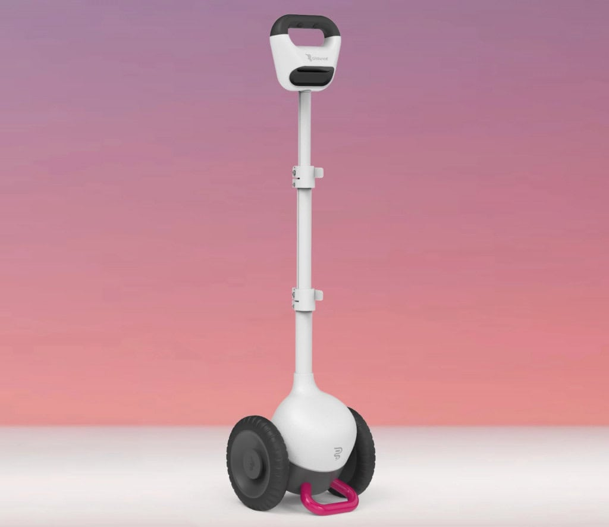
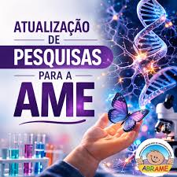
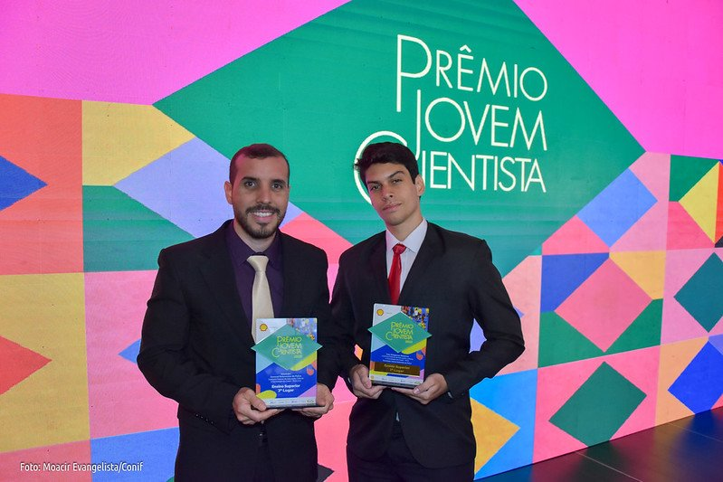
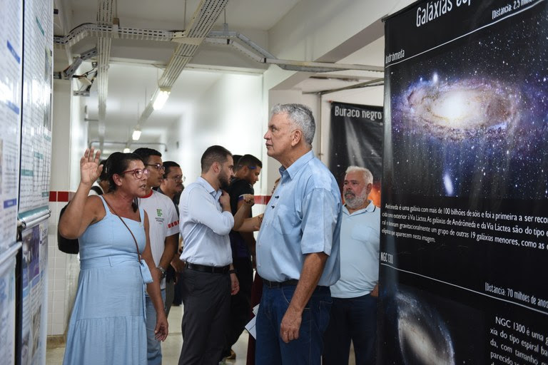
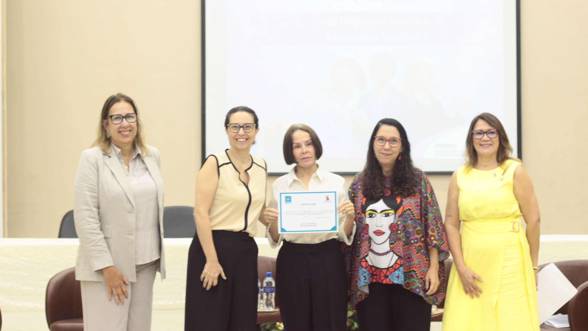

Suspiro
News
Ciência
Aqui você acompanha notícias, projetos e informações sobre Ciência no Brasil e no mundo
 Universidade Federal Fluminense (UFF)
Universidade Federal Fluminense (UFF)
Programa incentiva meninas na ciência
programa Meninas Cientistas do ON, criado pelo Observatório Nacional, vai levar estudantes do ensino médio para dentro de laboratórios e projetos de pesquisa. A iniciativa busca inspirar novas gerações de cientistas e ampliar a presença feminina na ciência.

(Imagem: Divulgação/Glidance)Bengala inteligente ajuda pessoas cegas
Novas tecnologias estão transformando a mobilidade de pessoas cegas. Bengalas inteligentes e óculos com inteligência artificial conseguem detectar obstáculos e ajudar na locomoção com mais segurança, trazendo mais autonomia no dia a dia.

abrame_amebrasilBrasil testa novo tratamento para AME
Pesquisadores da Fundação Oswaldo Cruz estão desenvolvendo um tratamento inovador para a Atrofia Muscular Espinhal. A nova terapia genética, chamada GB221, pode representar uma esperança para pacientes e marcar um avanço importante da ciência brasileira.
 Foto: © ZOOTAXA/Divulgação
Foto: © ZOOTAXA/DivulgaçãoNova perereca é descoberta no Cerrado
Uma nova espécie de perereca foi descoberta no Cerrado de Minas Gerais. Batizada de Ololygon paracatu, a descoberta mostra que a biodiversidade brasileira ainda guarda espécies desconhecidas pela ciência

Prêmio Jovem CientistaEstudante cria sistema contra desperdício de água
Um estudante do Instituto Federal do Ceará criou o Water Flow, um sistema inteligente que monitora o consumo de água e ajuda a identificar desperdícios e vazamentos. A inovação do jovem pesquisador Isac Diógenes já ganhou destaque nacional por contribuir para o uso mais sustentável da água.

Foto Adma Costa/Dscom IfacAcre terá primeiro planetário fixo
O Instituto Federal do Acre vai ganhar o primeiro planetário fixo do estado, instalado no campus de Rio Branco. O novo espaço promete aproximar estudantes e a população do universo da astronomia e da ciência
 Foto: Custodio Coimbra / Agência O Globo
Foto: Custodio Coimbra / Agência O Globo
Macacos-prego intrigam cientistas no Rio
Uma população misteriosa de macacos-prego na Floresta da Tijuca está intrigando cientistas. Resultado de décadas de solturas e abandono, os primatas mostram grande adaptação à cidade, mas também levantam alertas sobre conflitos com humanos e a importância de preservar a fauna silvestre.

universidade estadual do cearáEvento destaca mulheres na ciência
O evento Elas na Ciência, realizado na Universidade Estadual do Ceará, reuniu pesquisadoras e estudantes para discutir os desafios das mulheres na ciência e valorizar suas trajetórias acadêmicas. A iniciativa também premiou cientistas que se destacam na pesquisa e na inovação.